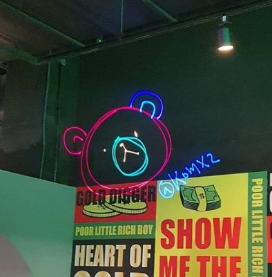

확인해보니 마지막 포스팅이 1월;;;
그리고 지금은 4월도 다 끝나가는 시점입니다;; 끄아악;;;;;;
떠들고 싶은건 많은데 체력이가 없네요;;;;
작년 9월-11월은 회사 이직관련 영국을 가네마네 고민하면서 두달 진상부렸고
한국 회사로 이직 결정하면서 집도 이사했습니다. - 요게 2월 말 이었구
3월 중순부터 3주간 지옥의 집수리 시즌;;;;;;;;;;;;
인터넷으로만 봤던 오만 인테리어 공사 진행에 관련된 스트레스를 몸소 체험했습니다;;
나중에는 지랄하기도 지치더구만요;;;;
코로나 시대 여행을 못가니 동네 민화수업과 기타수업에 돈을 쓰고있습니다.
요것 관련해서도 에피소드가 많은데ㅜㅜ 어디서부터 썰을 풀어야할지 모르겠어요 ㅋㅋㅋ
그동안 읽은책도 업데이트 하고싶은데;;;
일 마치면 누워서 겔겔거리기 바쁩니다 ㅜㅜ 정말 살기위해서 운동을 해야하는 시기가 온것 같아요;;;
뮤지컬이나 연극, 갤러리 관람은 가능하다는거에 감사하며 살고있습니다.
코로나 빨리 끝나라.......ㅜㅜ